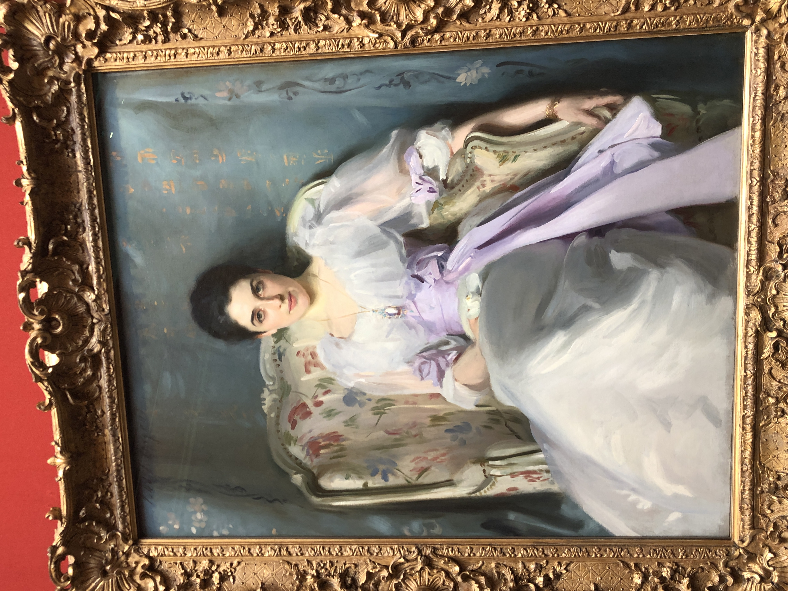
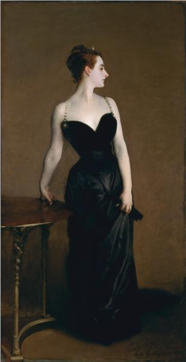
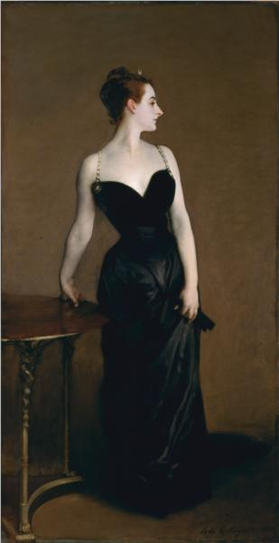
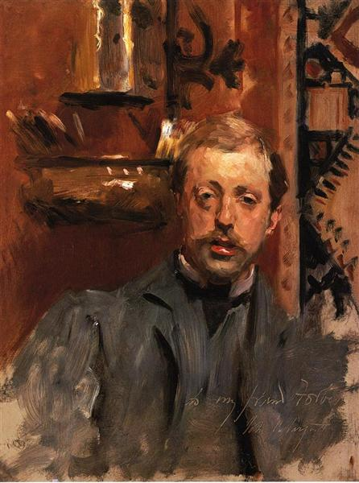
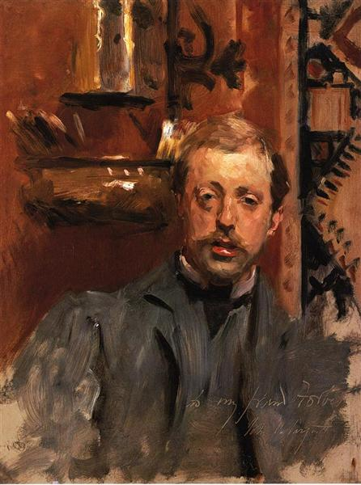

John Singer Sargent

Life, Career and Death
John Singer Sargent was one of the leading portraits painters of his generation, creating images of Edwardian Era high society. A prolific artist, he produced around 900 oil paintings, over 2,000 watercolors and even more sketches and preliminary studies. Born in Italy to American parents, Sargent spent his childhood traveling through Europe. He showed his artistic inclinations at a young age, and in 1874 he began his formal training at the Paris studio of Carolus-Duran. After leaving the studio in 1878, Sargent concentrated on building his craft, traveling through Europe and methodically studying works of old masters in Holland, Spain, and Venice. During his travels, he painted many genre scenes, such as Rosina, Capri (1878) and Venetian Bead Stringers (1880-1882). Sargent also experimented with Impressionist techniques at the influence of Claude Monet, whom he met at the second Impressionist exhibition in 1876. In Sargent’s case, the use of the Impressionist technique is noticeable in landscape paintings like Washerwomen (ca. 1880) and Landscape at Broadway (1885).
In the late 1870s and early 1880s, Sargent was building his reputation in Paris. He received positive critiques for portraits like Portrait of Frances Sherborne Ridley Watts (1877) and subject paintings like El Jaleo (1882). Sargent’s career suffered a setback at the 1884 Paris Salon where he exhibited Madame X (1883-1884), the portrait of the young socialite Virginie Amélie Avegno Gautreau. While the painting received some praise, it was mostly ridiculed and dismissed as a distasteful display of vanity. Sargent defended his work and refused to take it down even in the face of mounting pressure from Gautreau’s mother, who blamed the portrait for ruining her daughter’s reputation. Discouraged and humiliated by the scandal, Sargent left Paris and moved to London.
The scandal of Madame X followed Sargent to England: London patrons were wary of Sargent’s “French style” and he struggled to secure commissions. However, this changed in 1887 when he exhibited the painting Carnation, Lily, Lily, Rose (1885-1886), an image of two children lighting Chinese lanterns at dusk. The painting dazzled critics and audiences, and Sargent was once again in demand. He enjoyed an upscale clientele of aristocrats, wealthy businesspeople, artists, and performers from Europe and America. His international reputation reached its peak in the 1890s and early 1900s. At that time Sargent painted portraits of distinguished figures like Theodore Roosevelt, actress Dame Ellen Terry and author Henry James.
By 1910 Sargent gave up portraiture and focused his attention on painting murals and landscapes. One of his significant later works was the war painting Gassed (1919). The painting was commissioned by the British government who asked Sargent to create a large painting that embodied the idea of Anglo-American cooperation during World War I. In 1924, Sargent’s retrospective exhibition was held at the Grand Central Art Galleries in New York. After the retrospective, the artist returned to London, where he died of heart disease. Memorial exhibitions were held on both sides of the Atlantic: in Boston, New York, and London in 1925-1926.
Tribute
My personal experience with J.S.S and his work starts with my trip to Edinburgh in late 2021, I was visiting the Scottish National Art Gallery and as I was stumbling around amazed at all the work done by the masters in the craft, one specific painting made me stop on the spot and just admire the emotion, the brushwork and the mastery of this one specific painting. The painting was "Lady Agnew of Lochnaw" (as seen on the right). I still remember the gaze Lady Agnew gave through that canvas. Ever since then I've been an admirerer of J.S.S' work and always amazed at how loose he paints and its impression it puts on me and other admirerers alike. So I guess thank you to John Singer Sargent and the National Art Gallery of Scotland for introducing me to such fine craftsmanship!
Art Pieces
Here are some of Sargent’s works

 



 
